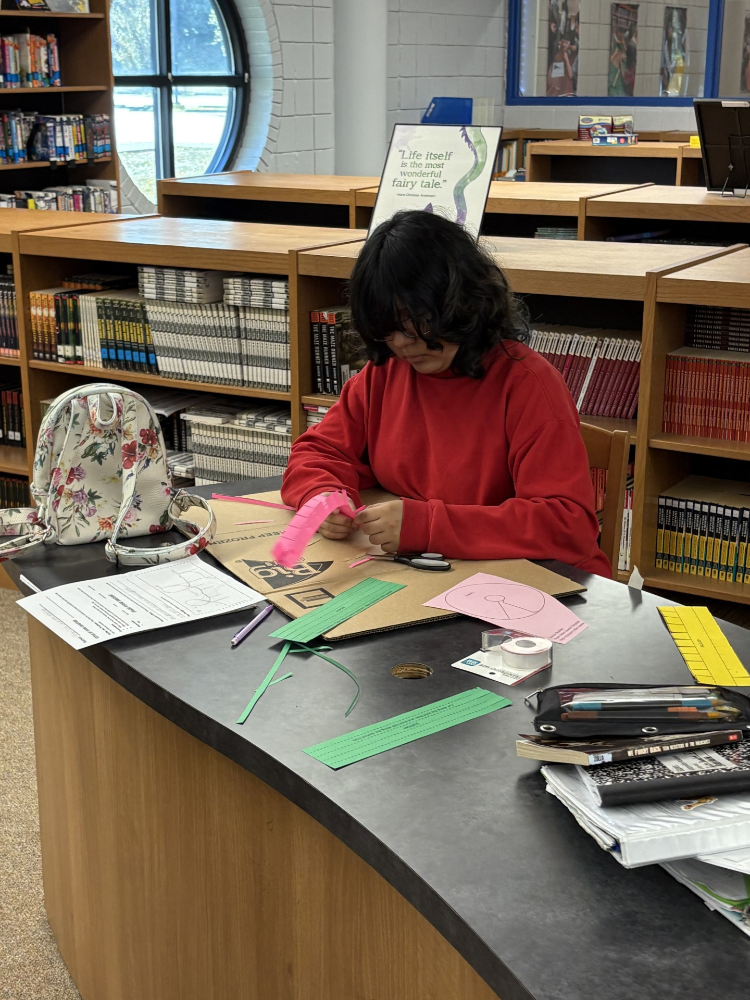

Library Programs |
|
STREAM
Current STREAM Project:Bottle Rockets powered by a chemical reaction |
MakerspaceOur makerspace is a collaborative, hands-on learning environment located within our library where students use tools to turn ideas into projects. It combines STEM/STEAM principles with "tinkering" to encourage problem-solving and innovation, featuring items like 3D printers, robots, crafting supplies, and electronics. BeanstackVisit Beanstck!Beanstack is a digital platform and app, often called a "Fitbit for reading," designed to motivate middle schoolers to read independently through gamified reading challenges, badge earning, and data tracking. It helps schools track reading minutes or books, offering incentives and leaderboards to foster a reading culture./li> Upcoming Events
“Today a reader, tomorrow a leader.” |

"Libraries are not just places to read; they are sanctuaries of knowledge and creativity." - Unknown